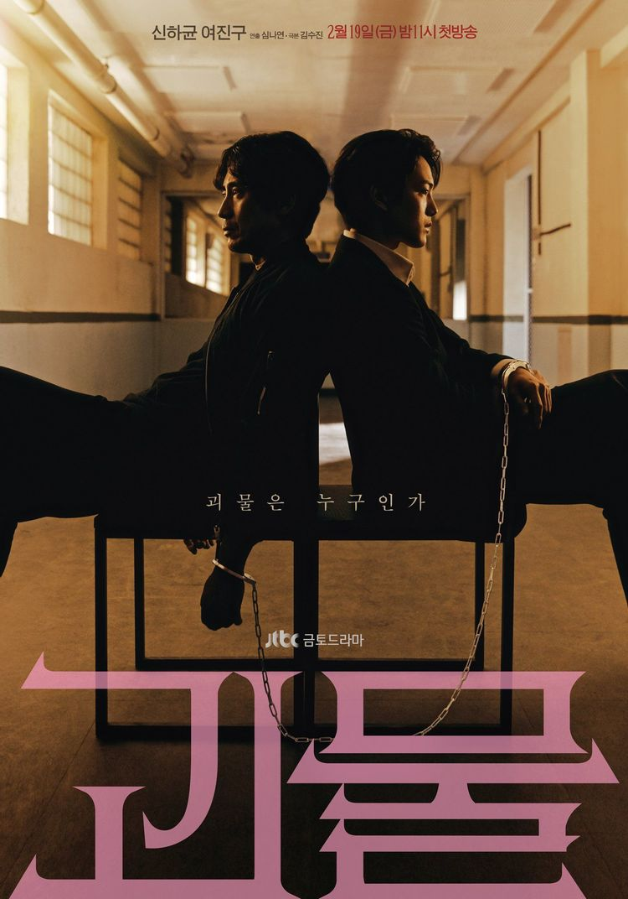

공식 포스터
등장인물
이동식
한주원

40세. 경기서부 문주경찰서 만양파출소 1팀 1조원. 경사.
"괴물 같은 새끼를 잡기 위해서는, 괴물이 되는 것 말고는 방법이 없어요."
27세. 경기서부 문주경찰서 만양파출소 1팀 1조장. 경위.
비밀을 안고 만양파출소로 내려온 엘리트 형사. 잘 생긴 외모에 뛰어난 스펙,
차기 경찰청장의 유력한 후보인 아버지를 둔 든든한 배경까지 모든 걸 다 갖춘 인물.
"누가 죽인 거예요. 당신이 감싸고 있는 사람이 누구냐고!"